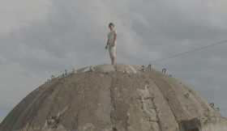

Battles

Isabelle Tollenaere – B / NL 2015 – 90 min – HD – Dutch / Albanian / Latvian / Russian / EnglOVeST
Sc: Isabelle Tollenaere – DoP: Frédéric Noirhomme – E: Nico Leunen– SD: Michel Schöpping, Kwinten Van Laethem – P+S: Michigan Films, Burlet Olivier, Isabelle Tollenaere
Fipresci Award, Rotterdam 2015
Battles takes a patient look, sensitive to tragedy and comedy, at the traces of battle in the landscape. A bunker in Albania used as a cattle stall by a family. Older ammunition that is exploded by the Belgian army. An army of Russian seamstresses who fabricate inflatable war material. And a tourist attraction in Latvia where people can pay to spend time in a military training camp.
Traces of battle that find a place in everyday life, while also describing something of the absurd relationships between the two. This debut by Flemish director Isabelle Tollenaere takes us to a twilight world where present and past, war and play, threat and innocence come together, and observes all this with as much tranquillity as eye for detail. Against these decors, ghosts from the past appear naturally, but they don't know the way either. – IFF Rotterdam
sunday 11 oct 6.30 pm Filmmuseum Munich
Interview with Isabelle Tollenaere in English (from the Nyon film festival Vision du Réel):
Isabelle Tollenaere (1984, Belgium) is an independent filmmaker who lives and works in Antwerp. She studied documentary making at the Sint Lukas University in Brussels. Her work has been shown in Centre Pompidou and at various international film festivals including IDFA and CPH:DOX. BATTLES is her feature debut.
Films: Stil leven 2007 – Trickland 2010 (5. UX), Viva paradis (2011), Battles (2015)